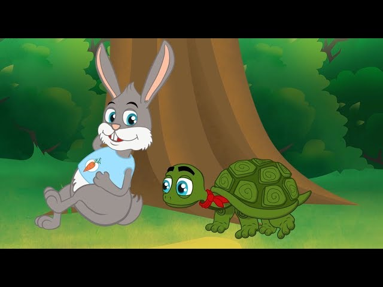

A Tartagura e a Lebre

Era uma vez… uma lebre e uma tartaruga. A lebre vivia caçoando da lerdeza da tartaruga.
Certa vez, a tartaruga já muito cansada por ser alvo de gozações, desafiou a lebre para uma corrida.
A lebre muito segura de si, aceitou prontamente.
Não perdendo tempo, a tartaruga pois-se a caminhar, com seus passinhos lentos, porém, firmes.
Logo a lebre ultrapassou a adversária, e vendo que ganharia fácil, parou e resolveu cochilar um pouco.
Quando acordou, não viu a tartaruga e começou a correr.
Já na reta final, viu finalmente a sua adversária cruzando a linha de chegada, toda sorridente.
Moral:
Devagar se vai longe.

"